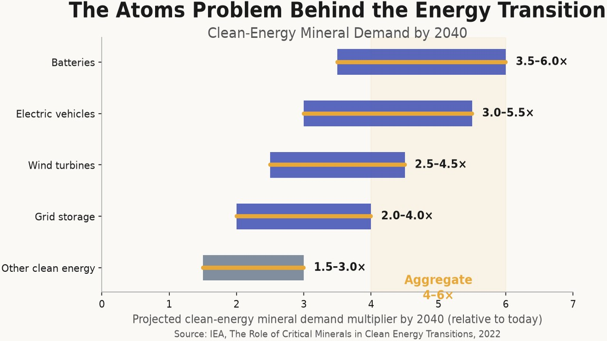
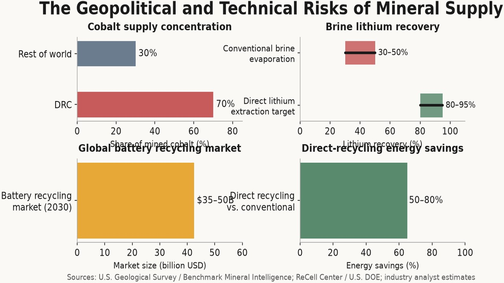
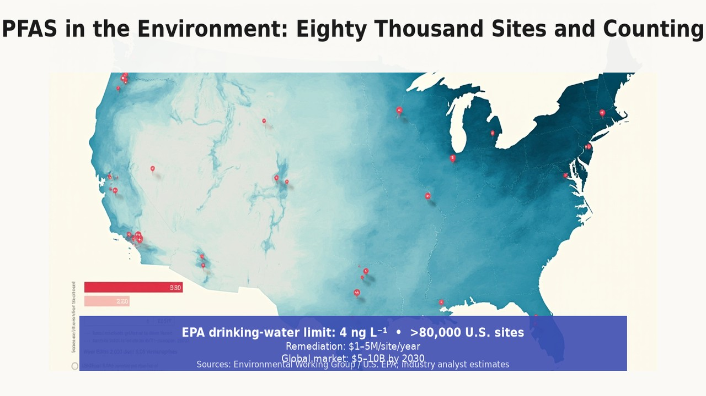
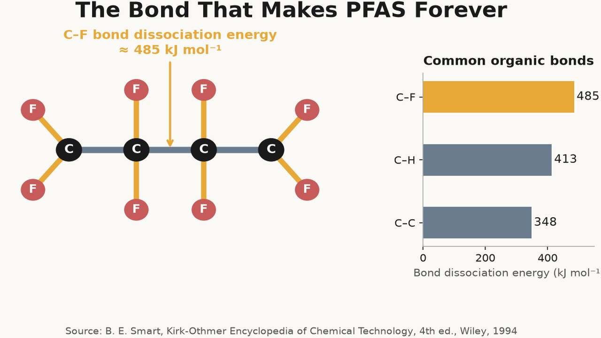
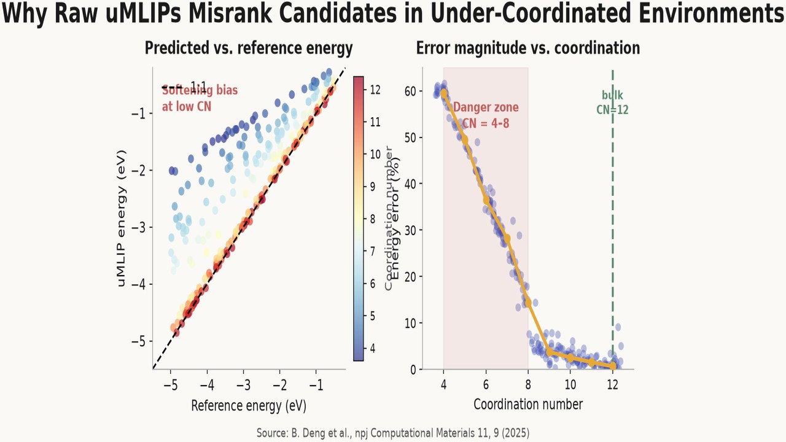
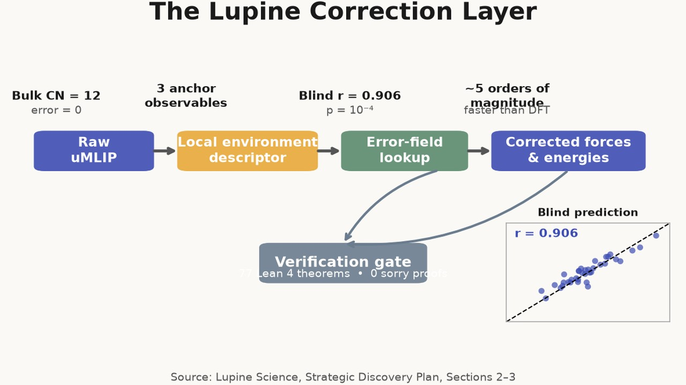
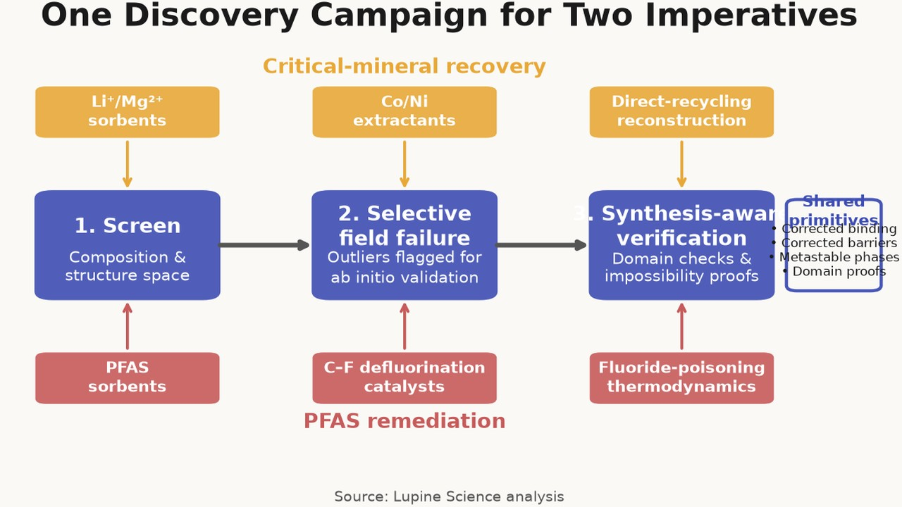
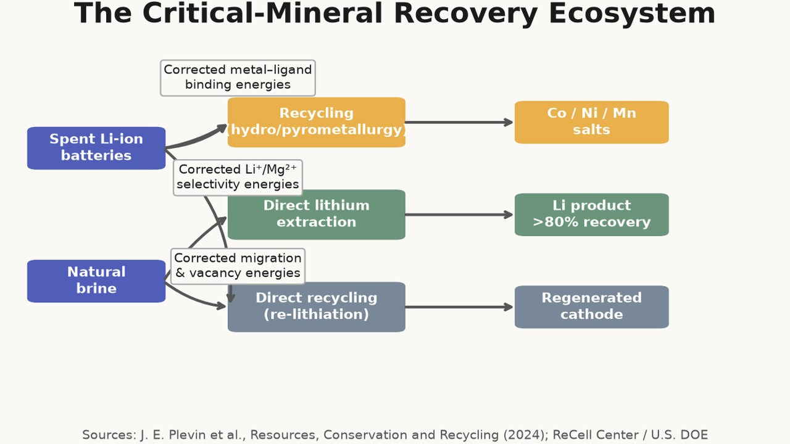
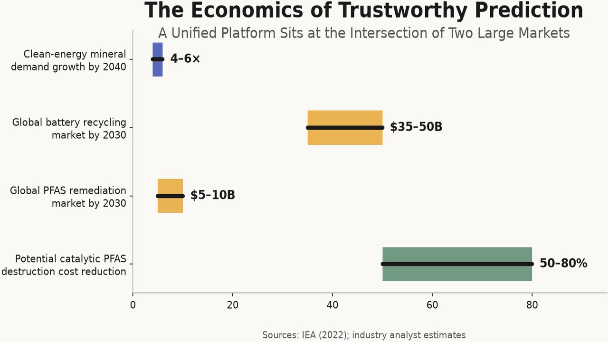
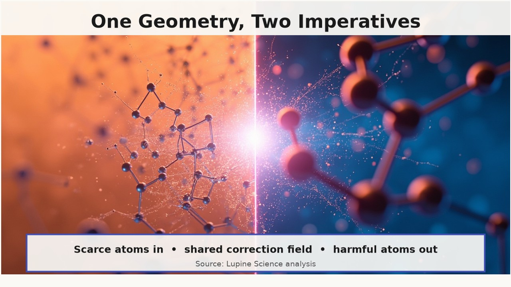

Critical Minerals, PFAS, and the Remediation Imperative

The energy transition is sometimes framed as a carbon problem, but it is equally a atoms problem. Every gigawatt-hour of batteries, every turbine, and every grid-scale storage installation requires lithium, cobalt, nickel, manganese, and rare-earth elements in quantities that primary mining cannot supply cleanly or quickly. By 2040, clean-energy technologies are expected to drive a four- to six-fold increase in mineral demand[1]. Recycling, direct lithium extraction, and urban mining are therefore not peripheral sustainability gestures; they are load-bearing parts of the transition. Yet the materials that would make them economical — selective sorbents, selective extractants, direct-recycling reconstruction conditions — are still discovered largely by trial and error.
In parallel, another atoms problem is accumulating in groundwater, blood serum, and soil. Per- and polyfluoroalkyl substances, or PFAS, are synthetic compounds whose carbon–fluorine backbone makes them extraordinarily persistent, mobile, and toxic at trace levels. The U.S. Environmental Protection Agency has set maximum contaminant levels of four nanograms per litre for PFOA and PFOS in drinking water[2]. Meeting those levels at scale, and ultimately destroying the captured material rather than relocating it, requires sorbents and catalysts that do not yet exist commercially.

Clean-energy technologies are expected to drive a four- to six-fold increase in mineral demand by 2040, turning atoms into a central constraint on the energy transition. Source: IEA, The Role of Critical Minerals in Clean Energy Transitions, 2022.These two problems look unrelated. One is a supply-chain bottleneck for the energy transition; the other is a public-health and environmental-liability crisis. They converge, however, on the same computational challenge. Both require accurate predictions of binding and activation energies in flexible, under-coordinated environments — ion-insertion sites in sorbents, ligand pockets in extractants, surface and single-atom sites in defluorination catalysts — that universal machine-learning interatomic potentials (uMLIPs) systematically misrepresent. This article argues that the same correction-and-verification layer that Lupine has built for climate-critical materials applies directly to both critical-mineral recovery and PFAS remediation, and that treating them as a single discovery problem is the fastest way to make progress on either.
The mineral-supply gap
Primary supply for several energy-transition metals is geographically concentrated and environmentally contentious. Roughly seventy percent of mined cobalt comes from the Democratic Republic of Congo[3]. Lithium extraction from South American salt brines consumes enormous volumes of water in already water-stressed regions. Nickel mining in Indonesia has been linked to deforestation and tailings disposal. These constraints are not hypothetical: they already move commodity prices and shape geopolitical alignments.
Recycling is the obvious offset. Spent lithium-ion batteries contain cobalt, nickel, lithium, and manganese at concentrations higher than many natural ores. The global battery recycling market is projected at thirty-five to fifty billion dollars by 2030[4]. Current flowsheets, however, are blunt instruments. Pyrometallurgy recovers cobalt and nickel but often loses lithium to slag. Hydrometallurgy can recover more elements but consumes large quantities of acid, base, and organic solvents, and produces waste streams of its own. Direct recycling — restoring degraded cathode particles to usable composition without full element separation — could cut energy use by fifty to eighty percent compared with conventional routes[5], but it requires precise control of re-lithiation, transition-metal reordering, and oxygen-vacancy healing. Those are defect-mediated processes, and they are exactly where raw uMLIPs fail.

Roughly seventy percent of mined cobalt comes from a single jurisdiction, while direct recycling could cut energy use by fifty to eighty percent — if the materials science can be solved. Sources: U.S. Geological Survey / Benchmark Mineral Intelligence; ReCell Center / U.S. DOE; industry analyst estimates.Direct lithium extraction from brine offers another route. Conventional evaporation ponds recover only thirty to fifty percent of lithium over twelve to twenty-four months and leave behind large footprints. Selective sorbents and membranes promise recovery above eighty percent in hours, but only if they can discriminate Li⁺ from Na⁺, K⁺, Mg²⁺, Ca²⁺, and other ions in complex natural brines[6]. The selectivity problem is a binding-energy problem: the right sorbent must present pockets with the correct size, charge density, and coordination flexibility to bind Li⁺ weakly enough to release it during regeneration while excluding more strongly binding divalent ions.
Cobalt–nickel separation adds a further wrinkle. Both elements occur in similar oxidation states and have similar ionic radii in battery leachate. Industrial separation relies on phosphinic-acid extractants such as Cyanex 272, but multi-stage circuits are required because single-stage separation factors are modest. Better extractants would need ligand pockets that discriminate Co²⁺/³⁺ from Ni²⁺ across pH, chloride concentration, and organic-phase conditions. Designing them from first principles means predicting metal–ligand binding free energies and extraction-complex geometries in polar, flexible environments.
PFAS: the forever-chemical bind
PFAS are, in a sense, the opposite of a supply-chain problem: they are a material we already have too much of. Their useful properties — water, oil, and stain repellence; thermal stability; surfactant behavior — come from the same carbon–fluorine bond that makes them nearly impossible to break down in the environment. The C–F bond dissociation energy is approximately 485 kJ mol⁻¹, one of the strongest in organic chemistry[7]. Once released, PFAS migrate through soils, aquifers, and food webs. They have been detected in the blood of nearly all people tested in representative U.S. samples, and epidemiological studies associate several PFAS with immune, thyroid, liver, kidney, and developmental effects[8].

More than eighty thousand PFAS contamination sites have been identified in the United States, with remediation costs reaching one to five million dollars per site per year. Sources: Environmental Working Group / U.S. EPA; industry analyst estimates.The regulatory response is tightening. Beyond the EPA drinking-water rule, states have enacted lower limits, and the European Chemicals Agency is evaluating restrictions on broad classes of PFAS. Remediation costs for contaminated water can reach one to five million dollars per site annually, and more than eighty thousand contamination sites have been identified in the United States alone[9]. The global PFAS remediation market is projected at five to ten billion dollars by 2030[10].
Current treatment technologies concentrate PFAS but do not destroy it. Granular activated carbon, ion-exchange resins, and reverse osmosis remove PFOA and PFOS from water, but the spent media must then be incinerated, landfilled, or treated by emerging destructive methods. Incineration requires temperatures above one thousand degrees Celsius and carries the risk of incomplete combustion and fluorinated emissions. Hydrothermal and plasma processes show promise but remain energy-intensive and scale-limited. A room-temperature catalytic defluorination route that mineralizes PFAS to fluoride, carbon dioxide or methane, and water would transform the economics of remediation. No such catalyst is commercial today.

The carbon–fluorine bond, with a dissociation energy of roughly 485 kJ mol⁻¹, is what makes PFAS both extraordinarily useful and extraordinarily persistent. Source: B. E. Smart, Kirk-Othmer Encyclopedia of Chemical Technology, 4th ed., Wiley, 1994.The two materials challenges are therefore a selective sorbent that binds PFAS at nanogram-per-litre levels in the presence of natural organic matter and common ions, and a catalyst that activates the C–F bond at moderate temperature without being poisoned by fluoride. Both challenges live in under-coordinated environments: hydrophobic and fluorophilic pockets in the sorbent, and metal surface or single-atom sites in the catalyst.
Why raw uMLIPs misrank the candidates
The failure mode is the same one documented in the climate series. uMLIPs are trained on bulk, near-equilibrium configurations where atoms have high, regular coordination numbers. Functional materials, by contrast, do their work at surfaces, vacancies, pore windows, and transition states. A recent systematic survey found that uMLIPs soften the potential energy surface by fifteen to sixty percent in these under-coordinated regions, with the largest errors at coordination numbers of four to eight[11].
For a lithium-selective sorbent, the error corrupts the relative binding energies of Li⁺, Na⁺, K⁺, and Mg²⁺ in flexible pore pockets. A framework that looks selective in a raw uMLIP screen may be mediocre or non-selective in experiment, while a better candidate is discarded. For a Co–Ni extractant, the error distorts metal–ligand distances and binding free energies in polar organic pockets, leading to wrong separation-factor rankings. For direct recycling, it underestimates Li⁺ migration barriers and oxygen-vacancy formation energies in degraded cathode particles, so the re-lithiation conditions predicted by the model do not restore the desired layered structure.

A systematic survey found that universal machine-learning interatomic potentials soften the potential energy surface by 15–60% in under-coordinated regions, with the largest errors at coordination numbers of four to eight. Source: B. Deng et al., npj Computational Materials 11, 9 (2025).For PFAS, the consequences are equally severe. C–F activation barriers on under-coordinated metal sites are underestimated, producing false-positive defluorination catalysts. Metal–fluoride formation energies are misranked, so a catalyst that appears regenerable in simulation converts irreversibly to a stable fluoride in practice. Host–guest binding energies in fluorophilic pores are wrong, so the sorbent that screens best does not actually bind PFOA or PFOS at environmental concentrations.
The error is not random noise. It has a smooth, measurable structure that correlates with local coordination and chemistry. That regularity is what makes correction possible.
The Lupine correction layer
Lupine’s environment error field measures the systematic departure between uMLIP predictions and higher-fidelity reference data as a function of local atomic environment. For a reference bulk environment — fcc atoms with coordination number twelve — the error is defined as zero. Three anchor observables calibrate the field, and a cubic spline with the bulk constraint predicts the error at environments the field was never directly fitted to. The result is a correction that can be applied at runtime to uMLIP forces and energies[12].

Lupine’s environment error field corrects uMLIP predictions at runtime, achieving a Pearson correlation of 0.906 in blind tests while retaining a roughly five-order-of-magnitude speed advantage over DFT. Source: Lupine Science, Strategic Discovery Plan, Sections 2–3.Blind prediction across thirty-six (model, material) combinations achieves Pearson r = 0.906 (p = 10⁻⁴, 95% CI [0.82, 0.96]) with zero adjustable parameters[12:1]. Runtime correction adds analytic forces to the uMLIP gradients, so molecular dynamics and structural relaxations follow the corrected potential energy surface. Corrected uMLIPs retain a speed advantage of roughly five orders of magnitude over density functional theory, making hundred-thousand- to million-candidate screens feasible[12:2].
For critical-mineral recovery, the same corrected insertion and site-selectivity energies that rank battery cathode compositions can rank selective sorbents for Li⁺ recovery. Corrected metal–ligand binding energies predict Co²⁺/³⁺ versus Ni²⁺ separation in phosphinic-acid, amine, and hydroxamic-acid extractants without empirical fitting. Corrected Li⁺ migration and oxygen-vacancy formation energies guide direct-recycling re-lithiation conditions for degraded layered-oxide cathodes.
For PFAS, corrected C–F activation barriers filter out false-positive defluorination catalysts before they reach experiment. Corrected metal–fluoride thermodynamics predict which catalyst compositions will be poisoned by fluoride formation and which may be regenerable. Corrected host–guest binding energies rank MOFs and porous polymers for PFOA/PFOS selectivity over competing ions and natural organic matter.

The same corrected binding energies, activation barriers, and verification discipline apply whether the goal is recovering critical minerals or destroying PFAS.The verification layer is as important as the correction. Lupine’s claims are accompanied by build-locked Lean 4 theorems; the current library contains seventy-seven theorems with zero sorry proofs[12:3]. Where the correction cannot be applied — for example, where the local environment falls outside the measured domain, or where a phase is genuinely synthesis-dependent — the system proves impossibility or bounded uncertainty rather than emitting a p-value. That discipline matters for both targets. A sorbent whose selectivity depends on an amorphous phase whose structure cannot be separated from synthesis history is flagged as unsupported. A defluorination catalyst whose active site is predicted only under conditions no synthesis can stabilize is not advanced.
What a unified discovery campaign looks like
Treating critical-mineral recovery and PFAS remediation as one program makes sense because the computational primitives are shared. Both need corrected binding energies in flexible coordination environments. Both need corrected activation barriers at under-coordinated metal sites. Both need to rank metastable phases that equilibrium screening would discard. Both need verification that separates supported predictions from synthesis-dependent speculation.
A practical campaign would proceed in layers. The first layer screens composition and structure spaces with corrected uMLIPs, using the environment error field to recover accurate energetics at the local sites that control function. For sorbents, this means ranking thousands of framework compositions and window geometries for Li⁺/Mg²⁺ or PFOA/organic-matter selectivity. For extractants, it means ranking ligand chemistries and conformations for Co/Ni separation factors. For catalysts, it means ranking alloy and single-atom sites for C–F activation barrier and fluoride resistance.

Selective sorbents, phosphinic-acid extractants, and direct-recycling reconstruction conditions all rely on accurate binding and migration energies in flexible, under-coordinated environments. Sources: J. E. Plevin et al., Resources, Conservation and Recycling (2024); ReCell Center / U.S. DOE.The second layer applies selective field failure. Where the measured error field itself departs from its smooth trend, it signals that the local electronic structure is unusual and that a candidate may break conventional scaling relations. In defluorination, for example, a site with anomalously high C–F activation but low metal–fluoride stability would be a priority target for higher-fidelity validation. The field does not just correct; it directs expensive ab initio work to the most interesting outliers.
The third layer is synthesis-aware verification. The correction field has a domain, and that domain is machine-checked. Predictions inside the domain are supported. Predictions outside the domain are either bounded by uncertainty proofs or flagged as unsupported. This prevents the familiar pattern in computational materials discovery, where a screen produces a long list of “predicted” materials that cannot be made or do not perform as advertised.
Why the numbers justify the effort
The quantified impact is deliberately conservative. Critical-mineral demand is projected to grow four- to six-fold by 2040, and battery recycling alone is a thirty-five to fifty billion dollar market by 2030[1:1][4:1]. Cobalt supply concentration in a single jurisdiction creates price and ethical risk that recycling can mitigate only if separation economics improve. Direct lithium extraction promises to raise lithium recovery from thirty to fifty percent to above eighty percent while reducing water use and land footprint[6:1].

A prediction-trust platform that addresses both critical-mineral recovery and PFAS remediation sits at the intersection of two multi-billion-dollar markets driven by four- to six-fold demand growth. Sources: IEA (2022); industry analyst estimates.On the PFAS side, more than eighty thousand U.S. sites are contaminated, remediation costs reach millions of dollars per site per year, and the global remediation market is projected at five to ten billion dollars by 2030[9:1][10:1]. A catalytic destruction route that cuts disposal costs by fifty to eighty percent relative to incineration would be transformative not only financially but environmentally, because it would close the loop instead of moving concentrated PFAS between media.
These numbers are not claims that Lupine will capture the entire market. They are claims that the underlying problems are materials-limited, that the materials limitation is a prediction-trust limitation, and that a single correction-and-verification layer can address both problem classes at once.
Conclusion: one geometry, two imperatives
Critical-mineral recovery and PFAS remediation sit on opposite sides of the industrial metabolism. One puts scarce atoms back into use; the other removes harmful atoms from circulation. Yet the geometry of the problem is the same. Both depend on binding and barrier energies in under-coordinated environments. Both are corrupted by the same uMLIP softening error. Both require screening composition spaces too large for DFT and ranking metastable phases that equilibrium thermodynamics discards. Both benefit from a correction field measured on anchor observables and from machine-checked proof of what can and cannot be claimed.
Lupine’s platform is not a point solution for batteries or direct air capture. It is a correction-and-verification layer for any material whose function is controlled by local environments that deviate from bulk equilibrium. Critical minerals and PFAS are two of the most urgent applications of that layer outside climate. The same measured field that corrects cathode and sorbent predictions corrects ion-selective recovery. The same corrected activation-barrier machinery that filters ammonia and methane catalysts filters defluorination catalysts. The same verification discipline that prevents false confidence in climate materials prevents false confidence in remediation.

Critical-mineral recovery and PFAS remediation sit on opposite sides of the industrial metabolism, but they share the same geometry of binding and barrier energies in under-coordinated environments.The next article in this series turns to cement and concrete — the heaviest industrial material by mass, and another case where amorphous, metastable, and under-coordinated phases control both emissions and performance. The thread remains the same: the materials bottleneck is a prediction-trust bottleneck, and trust comes from measuring the error, correcting it, and proving what can be believed.
Footnotes
International Energy Agency, The Role of Critical Minerals in Clean Energy Transitions, IEA, 2022. ↩︎ ↩︎
U.S. Environmental Protection Agency, “National Primary Drinking Water Regulations: Per- and Polyfluoroalkyl Substances (PFAS),” Federal Register, 2024. ↩︎
U.S. Geological Survey, Mineral Commodity Summaries 2024; Benchmark Mineral Intelligence cobalt supply estimates. ↩︎
Industry and analyst estimates for the global battery recycling market; range reflects variation in chemistry, region, and recovered-product pricing. ↩︎ ↩︎
ReCell Center, U.S. Department of Energy, Direct Recycling of Lithium-Ion Battery Cathodes technology summaries; Recellular process estimates. ↩︎
Direct lithium extraction technology reviews; see e.g. J. E. Plevin et al., “Direct Lithium Extraction: A Review of Technologies,” Resources, Conservation and Recycling (2024) and references therein. ↩︎ ↩︎
B. E. Smart, “Organofluorine Chemistry,” in Kirk-Othmer Encyclopedia of Chemical Technology, 4th ed., Wiley, 1994; C–F bond dissociation energy reference data. ↩︎
U.S. Agency for Toxic Substances and Disease Registry, Toxicological Profile for Perfluoroalkyls; U.S. EPA health effects summaries for PFAS. ↩︎
Environmental Working Group, “PFAS Contamination in the U.S.” mapping; U.S. EPA PFAS contamination site inventory. ↩︎ ↩︎
Industry analyst estimates for the global PFAS remediation market; range reflects treatment technology and regulatory scenario variation. ↩︎ ↩︎
B. Deng et al., “Systematic softening in universal machine learning interatomic potentials,” npj Computational Materials 11, 9 (2025). https://doi.org/10.1038/s41524-024-01500-6 ↩︎
Lupine Science, Strategic Discovery Plan, Sections 2–3. The plan documents the environment error field, the r = 0.906 blind-prediction result, the 15.6% runtime overhead, the 77 build-locked Lean 4 theorems, and the boundary conditions for impossibility proofs. ↩︎ ↩︎ ↩︎ ↩︎